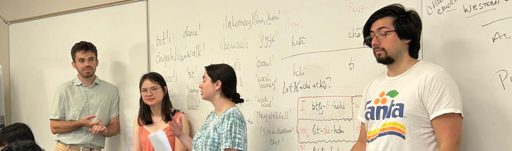

Alabama Language Project

Alabama (Muskogean) is an endangered Native Americal language spoken by the Alabama people, who currently reside on the Alabama-Coushatta Tribe of Texas reservation, as well as the Alabama-Quassarte Tribal Town in Oklahoma. Their traditional lands are on the Upper Alabama River in the modern-day state of Alabama, USA.
Since 2024, I have been engaged in a long term project, supervised by Tanya Bondarenko (Harvard), in collaboration with the Alabama-Coushatta Tribe of Texas and tribal member (and my good friend) Ava Silva (Harvard c/o 2027). This project's main goals are to document and revitalize the language.
As a part of this project, I have put together a number of projects, which you can see below. These include an online, searchable dictionary where other resources for learning the language are kept, a corpus, as well as a few other games.


Selective Opacity In Georgian
My research addresses a central question: why is it that some domains are opaque to syntactic dependencies while others are transparent? Why can the same syntactic dependency occur in some environments but not others? Selective Opacity effects (in particular, Williams Cycle effects) have been noted for many language from a variety of language families. My research seeks to explain these effects and sees if a 'Level-embedding-approach' can constrain movement.
Georgian (Kartvelian) serves as an excellent testing ground for these questions!